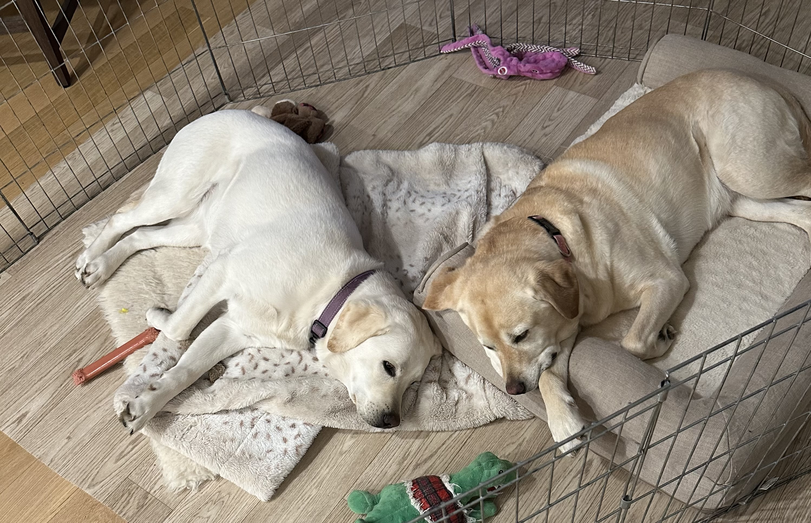

Kevin Schneider
Hello! My name is Kevin Schneider and I am a computer engineering major at virginia tech. I am very
excited for the next couple of weeks in cape town. A little about myself is I love staying active.
I played several sports in highschool my favorite of which was football. Now I play on my fraternities
intermural basketball, dodge ball and softball teams.
I have 2 sibling a younger brother named Jack and an older sister named Megan. I am originally from
Franklin Lakes, NJ. I also have two dogs ally and luna, I will put a photo of them below.

I'm still relatively new in the area of software engineering but I am eager to learn. All the prework
I have completed so far has been very interesting. My github username was nothign special just my full
name and the year I was born in so, KevinSchneider05. Thats about it!